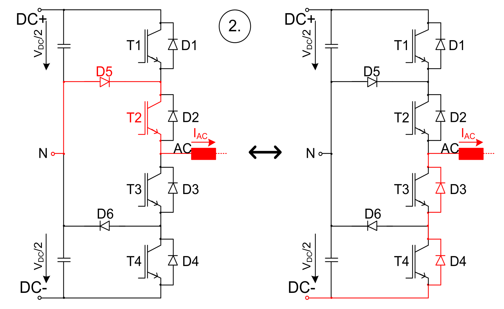
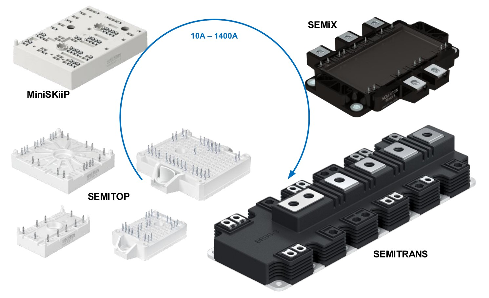
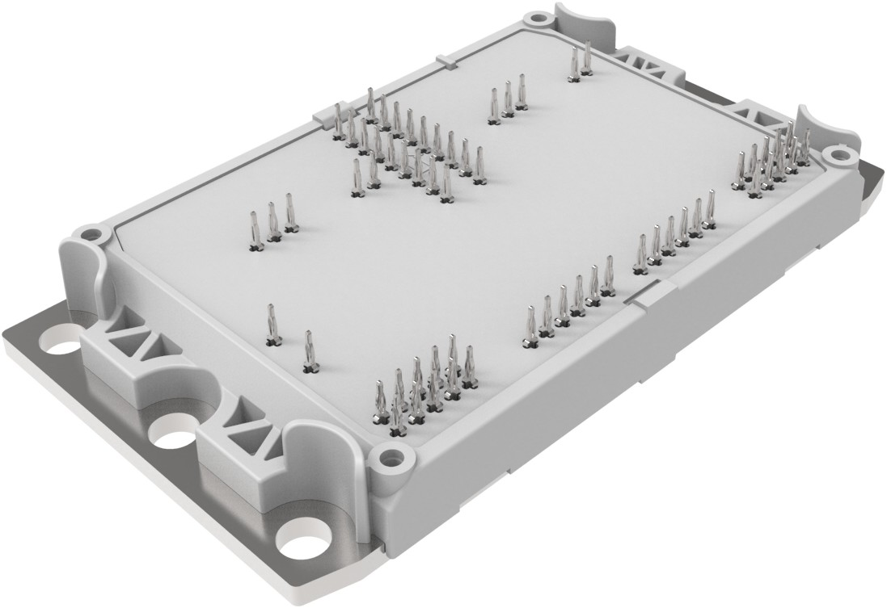
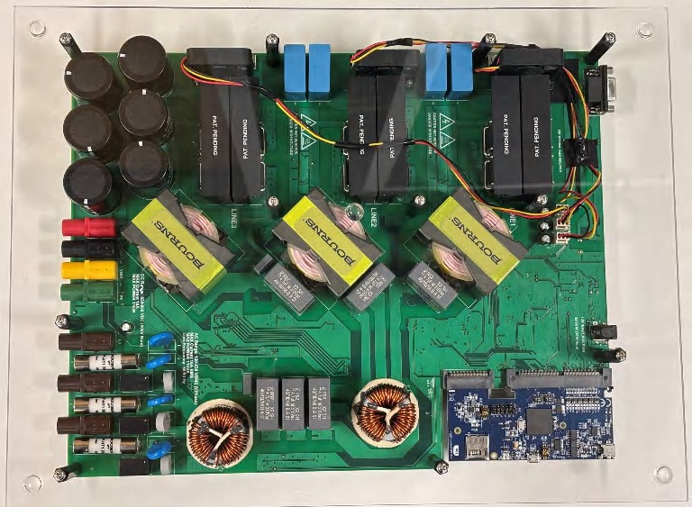
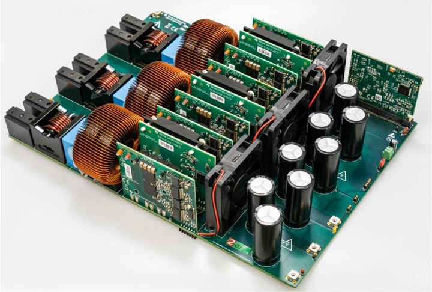
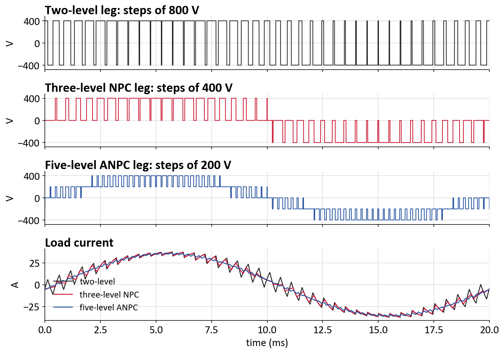

EE561
Advanced Static Power Conversion
Multilevel Converters
Building the levels: Clamp · Float · Combine
Prepared by Sefer İdacı
Department of Electrical and Electronics Engineering · METU PowerLabFall 2026
Textbooks and Resources
Textbooks
- Wu & Narimani, High-Power Converters and AC Drives, Ch. 8–9
- Holmes & Lipo, Pulse Width Modulation for Power Converters, §1.7–1.8
Application notes and reference designs
- Semikron Danfoss AN 11-001: 3L NPC, TNPC & ANPC topology
- TI TIDA-01606: 11 kW three-level T-type SiC inverter
- TI TIDA-010210: 11 kW three-level ANPC GaN inverter
Multilevel converters
What is a multilevel converter?
N levels: N − 1 capacitors split the DC link into steps of Vdc/(N − 1)
Multilevel converters
More levels: the output gets closer to a sine
The output only jumps between neighbouring levels: less for the filter to remove
Why multilevel?
Advantages: everything scales with the step
Why multilevel?
Disadvantages: more parts, more to control
Worth it when Vdc or fsw is high
Why multilevel?
In practice: cooling, layout and power modules

Semikron Danfoss, AN 11-001, Fig. 11
Easier
Cooling: loss spread over more chips
Size: smaller filter and heat sink
Parts: cheap, fast low-voltage devices
Harder
Layout: long loops add stray inductance
Hot spots: the hottest chip sets the rating
Drivers: an isolated supply per switch
Answer: the whole leg in one power module. Short loops, one heat sink (next slide)
Why multilevel?
Examples: three-level modules and boards

NPC, T-type, ANPC · 10–1400 A
Semikron Danfoss, AN 11-001, Fig. 36

1200 V, 560 A · press-fit pins
Vincotech, flowNPC E3BP product page

11 kW · discrete devices
Texas Instruments, TIDA-01606 design guide (TIDUE53)

11 kW · one power card per phase
Texas Instruments, TIDA-010210 design guide (TIDUEZ0)
Why multilevel?
Real switches: every device has one voltage rating

1200 V, 20 A · cookers, PV
Raimond Spekking · CC BY-SA 4.0

1200 V, 1400 A · drives, wind
Sthdhk · CC BY-SA 4.0

3300 V, 1200 A · trains, MV drives
ArséniureDeGallium · CC BY-SA 3.0

IGBT chips (gate wire) + diode chips
Leonrosenbaum · CC BY-SA 3.0
Why multilevel?
Lower-voltage devices switch with 10× less energy
Higher rating: thicker chip, slower switching
Esw ∝ V · I · tsw
At 100 A:
307 mJ (2L, 3.3 kV)
31 mJ (3L, 1.2 kV)
Same loss:
3L IGBT at 6 kHz, SiC at 70 kHz
3L IGBT at 6 kHz, SiC at 70 kHz
Outline
Three ways to make an extra level
1 · CLAMP
Output to the midpoint O
NPC · T-type · ANPC
2 · FLOAT
A charged capacitor in series
Flying capacitor
3 · COMBINE
Midpoint and capacitor
5-level ANPC
Clamp
NPC: clamp diodes add a 0 V level
D5, D6 hold the middle nodes at O: every switch blocks Vdc/2
State O: the phase current flows through the midpoint
Clamp
Which device pays the switching loss?
ia > 0: S1 ↔ D5, S1 pays
ia < 0: S3 ↔ D1, S3 pays
Clamp
T-type and ANPC: two fixes to the NPC
T-type: 1 device in the path, but S1, S4 block Vdc
ANPC: the clamp diodes become switches S5, S6
Two redundant 0 V states: you choose which device heats up
Clamp
Who works hardest? It depends on the power flow
Inverter: outer S1, S4 hottest
Rectifier: inner S2, S3 hottest
ANPC: S5, S6 share the loss
Float
Flying capacitor: a charged capacitor makes 0 V
10 and 01: redundant, both give 0 V …
… but move charge in opposite directions
Combine
5-level ANPC: a selector plus a flying-capacitor cell
Selector: switches slowly, at f1
Cell: adds ±Vdc/4 at the PWM rate
Redundant: +200 a charges Cfc, +200 b discharges it
Clamp · Float · Combine
Choosing a topology
| Leg | Devices | Each blocks | States / levels | + Advantage | − Disadvantage | Typical use | |
|---|---|---|---|---|---|---|---|
| 2-level | 2 switches | Vdc | 2 / 2 | simplest | big steps, slow parts | ≤ 1 kV drives | |
| NPC | 4 switches, 2 diodes | Vdc/2 | 3 / 3 | half the device voltage | uneven losses | MV drives, PV | |
| T-type | 4 switches | Vdc outer | 3 / 3 | 1 device in the path | outer switches block Vdc | ≤ 1 kV: UPS, PV | |
| ANPC | 6 switches | Vdc/2 | 6 / 3 | losses shared | more switches | 1500 V PV, SiC | |
| Flying cap. | 4 switches, Cfc | Vdc/2 | 4 / 3 | no diodes, ripple at 2 fsw | large Cfc, pre-charge | DC–DC, GaN | |
| 5L-ANPC | 8 switches, Cfc | Vdc/2, Vdc/4 | 8 / 5 | 5 levels | most parts, 2 voltages to hold | MV drives |
More states than levels: redundant states, the freedom the next talk uses
Simulation
PLECS: more levels, smaller steps, less ripple

Same fundamental (360 V, 35.6 A). Current ripple: NPC 0.55×, 5L-ANPC 0.15× the two-level ripple
References
- B. Wu, M. Narimani, High-Power Converters and AC Drives, 2nd ed., Wiley-IEEE Press, 2017.
- D. G. Holmes, T. A. Lipo, Pulse Width Modulation for Power Converters: Principles and Practice, Wiley-IEEE Press, 2003.
- Semikron Danfoss, “3L NPC, TNPC & ANPC Topology,” Application Note AN 11-001.
- Texas Instruments, “11-kW, bidirectional three-phase three-level (T-type) inverter and PFC reference design,” TIDA-01606 (design guide TIDUE53).
- Texas Instruments, “11-kW, bidirectional, three-phase ANPC based on GaN reference design,” TIDA-010210 (design guide TIDUEZ0).
- Vincotech, flowNPC E3BP three-level NPC module 30-EP12NIC560H7-PU10F57T, product page.